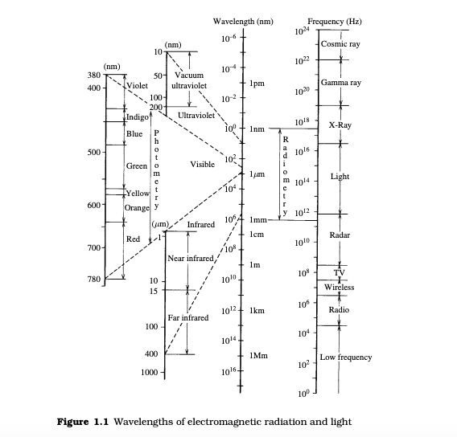
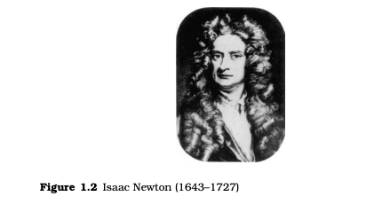
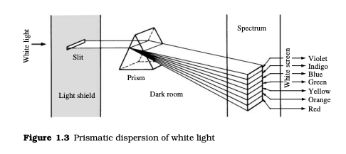

In physics, the term "light" may refer more broadly to electromagnetic radiation of any wavelength, whether visible or not.[4][5] In this sense, gamma rays, X-rays, microwaves and radio waves are also light. The primary properties of light are intensity, propagation direction, frequency /recurrence/ repetition/regularity wavelength spectrum and polarization. Its speed in vacuum, 299792458 m/s, is one of the fundamental constants of nature.[6] Like all types of the electromagnetic radiation, visible light propagates by massless elementary particles that are called as photons that represents the quanta of electromagnetic field, and can be analyzed as both waves and particles. The study of light, known as optics, is an important research area in modern physics.
The main source of natural light on Earth is the Sun. Historically, another important source of light for humans has been fire, from ancient campfires to modern kerosene lamps.With the development of electric lights and power systems, electric lighting has effectively replaced firelight
Light is radiation in the form of electromagnetic waves that make
vision possible to the human eye.Electromagnetic radiation can be
classified by its wavelength or frequency, as shown in Figure 1.1.
What is wavelength of light?👇
The wavelength of light is confined to a very narrow range limited by a short-wavelength edge between 360 and 400 nm (1 nm =
10−6 mm; see Appendix I) and a long-wavelength edge between 760
and 830 nm. Infrared radiation and ultraviolet radiation , which are
not visible to human eye, are sometimes included in the category of
light and referred to as infrared light and ultraviolet light. However,
it is better to call these categories infrared radiation and ultraviolet
radiation. When it is necessary to distinguish light from radiation
not visible to human eye, it is referred to as visible light or visible
radiation.
How white light is composed of several colored lights?👇
Newton (Figure 1.2) showed experimentally that white light, such
as sunlight, is composed of various types of colored light. More
specifically, he demonstrated the following facts by introducing
sunlight into a prism (Figure 1.3).
1. White sunlight incident on a prism is separated into seven components differing in color, as observed in a rainbow. The seven
colors are red, orange, yellow, green, blue, indigo, and violet (see
Color Plate 1).
2. The spectrum (i.e., the seven components of light differing in
color) can be reunited to give the original white light by focusing
the components back through a reversed prism.
3. If one color component alone is incident on a prism, it cannot be
further separated into the seven colors.
We now know that, when observed in detail, the spectrum
includes an infinite range of components of different wavelengths
that cannot all be given different color names. The classification
into seven named components is based on a simple set of basic.



color names. On detailed examination, other colors can be named.
For example, reddish orange colors appear between the pure red
and pure orange parts of the spectrum.
Monochromatic light is light that cannot be separated into components.White light such as sunlight is polychromatic, i.e., amixture of
monochromatic lights. A spectrum is a band of color observed when
a beam of white light is separated into components of light that are
arranged in the order of their wavelengths. The approximate correspondence between wavelengths and colors is shown in Figure 1.1.
If one or more components is decreased in intensity and the
components are recombined, colored light is obtained instead of
the original white light. Thus, if an object illuminated with white
light reflects the components with differing reflectance depending
on the wavelengths, the human eye sees the object as colored. For
example, a red object does not reflect much in the range from violet to yellow, but reflects the red component strongly. Thus, it is perceived to have a red color. In general, color is generated whenever
white light is modified by reflection or transmission by an object.